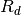
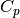
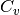
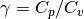
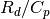

物理・数学定数
| pi | PI |
| earth_radius | 地球半径 [m] |
| earth_daysec | 地球自転周期 [sec] |
| earth_omega | 地球回転角速度 [rad/sec] |
| earth_gravity | 重力加速度 [m s^-2] |
| earth_f(lat) | コリオリパラメータを緯度から計算する。 |
| earth_beta(lat) | ベータパラメータを緯度から計算する。 |
| air_rd | 乾燥空気の気体定数[J K^-1 Kg^-1] |
| air_cp | 乾燥空気の定圧比熱[J K^-1 Kg^-1] |
| air_cv | 乾燥空気の定積比熱[J K^-1 Kg^-1] |
| air_gamma | 比熱比 |
| air_kappa |  |
ベータパラメータを緯度から計算する。
| Parameters : |
|
|---|---|
| Returns : |
|
>>> from pymet.constants.mod_const import earth_beta
>>> earth_beta(_np.array([-30., 0., 30.))
array()
コリオリパラメータを緯度から計算する。
| Parameters : |
|
|---|---|
| Returns : |
|
Note
Computesf = 2 * earth_omega*sin(lat)
>>> from pymet.constants.mod_const import earth_f
>>> earth_f(_np.array([-30., 0., 30.))
array()